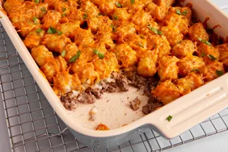

Tater Tot Casserole

Tater tots - childhood memories much? Well, you loved em so why did the relationship
have to end? Answer: It doesn't. Bring tater tots with you into adulthood by utilising
them in an adult dish! And let's face it - what says "adult" like a homemade casserole?!
Ingredients:
- 1 pound of minced beef
- 1 can of condensed crean of mushroom soup
- Salt and pepper
- 1 bag (16 ounce) of frozen tater tots
- 2 cups of shredded cheese
Steps:
- Gather the ingredients. Preheat the oven to 350 degrees F (175 degrees C).
- Heat a large skillet over medium-high heat. Cook and stir ground beef in
the hot skillet until completely browned and crumbly, 7 to 10 minutes.
Stir in condensed soup; season with salt and black pepper.
- Transfer beef mixture to a 9x13-inch baking dish; layer tater tots evenly
on top and sprinkle with Cheddar cheese.
- Bake in the preheated oven until tater tots are golden brown and hot, 30 to 45
minutes.
- Serve!
Home